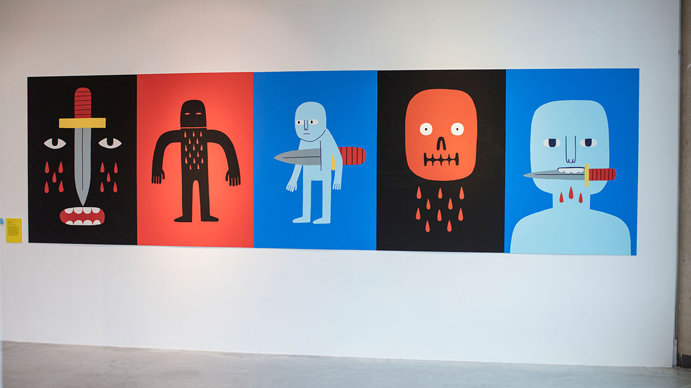

School of Art, Design and Architecture
BA (Hons) Fine Art
Realise your artistic potential. Guided by practising artists, you’ll find the freedom to try different techniques and technologies. By analysing artistic influences and inspirations, you’ll deepen your understanding of what makes great art and gain the skills to create it. You’ll develop the expertise to feed your emotions and ideas into your work. And with excellent international links offering opportunities to travel, you’ll have everything you need to make your art the best it can be.
Graduates in fine art find employment in a diverse range of careers, from teaching to professional practice, working in museums to art therapy. We’ll help you find your niche and train for it with flexible internships.
| UCAS course code | 104 |
| Institution code | W100 |
| Duration | 3 years |
| Assessment breakdown | 5% Exams, 60% Coursework, 20% Practicals, 15% Other |
| Course type | Full time |
| Location | Plymouth |
FAQ

3:28

A portfolio is a collection of pieces of work that give us an insight into you as an artist. Your portfolio tells us a lot about about how you think and work as a practising artist. We've compiled some helpful tips, portfolio advice and ways to avoid unnecessary stress before you meet with us.

5:37
With two-thirds of your time on the course spent in the studio, the facilities for you to create your own artwork need to be exceptional...and they are. From ceramics workshops to dedicated photography darkrooms, you’ll have access to the tools you need.

7:46
Graduates in fine art find employment in a diverse range of careers, from teaching to professional practice, working in museums to art therapy. We’ll help you find your niche and train for it with flexible internships.